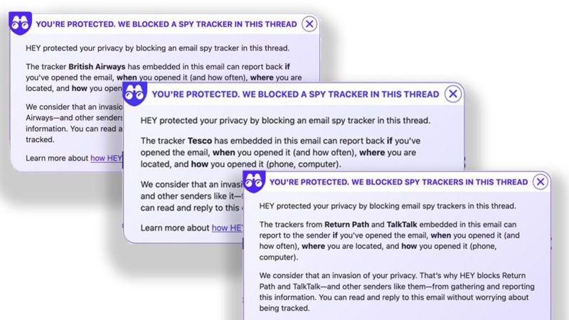

Los pixeles espias.
Los pixeles espias son pixeles de 1x1 que suelen estar escondidos .png o .gif, normalmente usados en la cabecera, pie de pagina o incluso en el cuerpo del correo electrónico. A simple vistas con casi imposibles de detectar, luego para poder detectarlos tenemos que usar algunas aplicaciones externas como por ejemplo "HEY" que alerta a sus usuarios cuando detecta un pixel espia

Aunque esta ventaja solo esta disponible en la versión de pago.Solo con abrir el correo es suficiente para activarlo, con este unico paso es suficiente para que el pixel espia tenga la información que quiera. Y, ¿Que información puede obtener?, he aquí una lista de menor a mayor gravedad que puede obtener un pixel espia:
- Si el email ha sido abierto y cuantas veces ha sido abierto
- Que dispositivo o dispositivos lo han abierto y con que cliente de correo.
- La ubicación fisica aproximada a partir de la dirección del protocolo, incluso en algunos casos llegando hasta una calle cercana.
¿Porque las compañias lo usan tanto?
El motivo es bastante simple, es una tactica de mercado bastante usada, y es por eso mismo que muchas compañias defienden su uso y estan a favor de los pixeles espias, muchas de ellas alegando que esta incluida en las politicas de privacidad de las empresas. Esta información puede ser luego utilizada para determinar el impacto de una campaña especifica mediante correos electronicos por ejemplo. En mi opinión, me parece una falta muy grave de privacidad, sobre todo la marcada anteriormente en rojo ya que la primera por ejemplo suelen incluirla muchos clientes de correos como "Acuse de recibo" que es algo ya normal hoy en dia, pero que por una imagen puedan descubrir desde donde fisicamente se ha abierto es algo que deberia de solucionarse cuanto antes. ¿Y como podemos solucionar esto?, una manera de solucionarlo es configurar nuestro correo para que por defecto no cargue las imagenes, de esa manera evitariamos que los pixeles espias se activasen. Agrego también un video donde se resume todo lo dicho anteriormente: